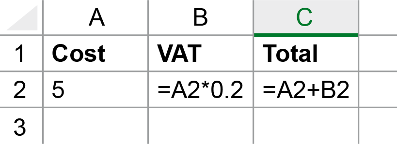
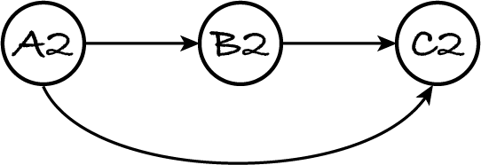
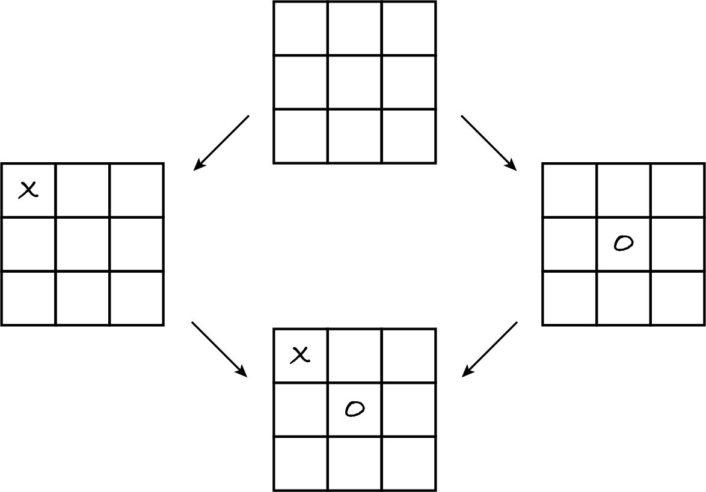

17.1. Modelling with graphs
Graphs are simple abstract mathematical structures and that’s what makes them so powerful: they can model myriad real-world situations. Once you learn what graphs are and what they can represent, it’s difficult not to see graphs everywhere.
An undirected graph consists of a set of items called nodes and a set of undirected edges, such that each edge connects two different nodes and there’s at most one edge between any pair of nodes. A directed graph (abbreviated digraph) consists of a set of nodes and a set of directed edges, such that each edge connects two different nodes and there’s at most two edges in opposite directions between any pair of nodes.
Graphs are usually depicted with the items within circles or ellipses and edges as lines. Directed edges have an arrowhead to show their direction. The next figure shows an undirected graph on the left and a digraph on the right.

Any undirected graph can be represented as a digraph. If we replace each undirected edge by two opposing directed edges, we transform an undirected graph into an equivalent digraph, albeit with double the number of edges.
Info: Nodes are also called vertices (singular: vertex) and edges are also called links. Directed edges are also called arcs. There are many kinds of graphs; those defined above are called simple graphs.
As I mentioned in the introduction, graphs can represent all sorts of networks.
Several transport networks can be modelled by undirected graphs.
A railway network can be modelled with nodes representing stations and edges representing track between stations. Track doesn’t have a direction, it can be used by trains travelling in both directions, so the edges are undirected.
A flight network can be modelled with nodes representing airports and edges representing the existence of a direct flight between two airports. Assuming there’s a return flight between the same airports, the edges are undirected.
The motorway network of a country can be represented by an undirected graph, because motorways can be used in both directions. Nodes represent junctions and edges represent stretches of road between them.
It’s often better to use digraphs, in order to represent transport networks in more detail.
The street network of a city can be modelled by a digraph with nodes representing junctions and edges representing streets. The direction of the edge indicates how the traffic flows. Directed edges allow us to distinguish one-way from two-way streets.
If one direction of a motorway segment between two junctions is blocked, e.g. due to an accident, we need to represent each direction separately. A digraph with opposing edges between pairs of junctions is a more flexible model than an undirected graph, because it allows us to remove edges (and add them back) as the situation on the ground changes.
Like transport networks, communication and information networks can be modelled by undirected or directed graphs, depending on whether communication and information flows both ways between any pair of nodes or not, and on whether we want to represent each direction of flow separately or not.
The internet (a communication network) can be modelled as an undirected graph with nodes representing computers and edges representing a direct link (like an Ethernet cable or a Wi-Fi connection) between two computers. The World Wide Web (an information network) can be modelled as a digraph, where nodes represent web pages and an edge from A to B indicates that page A links to page B.
A spreadsheet can also be seen as an information network, with nodes representing cells and a directed edge from node A to node B if the value of cell A is used by the formula in cell B. Whenever the user changes the value of a cell, the spreadsheet app follows outgoing edges to quickly recompute only those formulas that directly or indirectly depend on that cell.
The following spreadsheet adds 20% VAT to the cost of a good or service.
The underlying digraph is:
Whenever the value in cell A2 changes, the app follows the outgoing edge to recompute B2 and then its outgoing edge to recompute C2.
Another example from Computing is the digraph formed by the data and the variable names in memory and the references between them. As the diagrams in Section 6.2.1 show, the nodes are the variables and the data, and an edge from A to B indicates that A refers to B. An assignment A = C removes any existing edge from A and creates an edge from A to the data referred to by C.
Biological networks are usually modelled with digraphs. For example, a food web is modelled with nodes representing animal and plant species, and an edge from node A to node B indicating that animal A eats animal or plant B.
In a spreadsheet, a formula in one cell depends on the values in other cells; in a food web, a species depends on other species for nourishment. More generally, digraphs can represent networks of dependencies. For example, a digraph can model a work schedule, with nodes representing tasks and an edge from A to B indicating that task A has to be done before task B.
Social networks are modelled with graphs where nodes represent people. To model the Twitter network, we use a digraph with an edge from A to B indicating that A follows B. To model the Facebook or LinkedIn networks, we use an undirected graph with an edge between two people indicating that they are friends or acquainted.
Digraphs can also represent state transition diagrams. Each node is a possible state and an edge from A to B represents a transition: it’s possible to go from state A to state B. For example, each possible state of a Noughts and Crosses game corresponds to a node and each edge to a valid move, leading from one state to another. For example, if either player can start the game, the digraph includes the following nodes and edges (among many others).
Programs can then analyse the graph to determine a good move. Except for the simplest of games, the graph is too big to be fully analysed, so the program works on a partial graph: for example it generates only the states reachable from the current state in three moves. We’ll return to state transition graphs in a later chapter.
In summary, whenever you want to represent a set of entities and a binary relation, i.e. between pairs of entities, a graph may be the best choice. If the relation is symmetric, i.e. holds in both directions, then you can use an undirected graph; otherwise it has to be directed. The ‘A is friends with B’ relation on Facebook is symmetric: if Alice is Bob’s friend, then Bob is Alice’s friend. The ‘A follows B’ relation on Twitter isn’t symmetric: Alice may follow Bob without Bob following Alice.
For asymmetric relations we often have a choice about the direction of edges. We can represent the same Twitter network with edges representing the ‘follows’ or the ‘is followed by’ relation, depending on the problem at hand. The ‘is followed by’ graph can be obtained from the ‘follows’ graph by reversing the direction of the edges.
Likewise, if there’s an edge from task A to task B in a work schedule graph this could either mean that task A depends on (and thus is done after) task B, or that task A prepares for (and thus is done before) task B.
When you’re asked to model some situation with a graph, you must state exactly what the edges and their direction represent. All edges must represent the same relation, otherwise the model is useless.
Once you have modelled a set of entities and their relations as a graph, you can use general-purpose algorithms to process your graph. For example, you may have experienced a spreadsheet app telling you there’s a circular dependency between your formulas. The app simply uses a general algorithm to find a cycle in any digraph. The same algorithm can find circular dependencies in a work schedule.
If a digraph has no cycles, there’s an algorithm for sequencing the nodes so that for every edge from A to B, B will appear after A in the sequence. Such an algorithm is used by a spreadsheet to determine in which order to recalculate values: in the above example, cell C2 must be recomputed after B2. It’s also used by garbage collection: if name or datum A refers to B which in turn refers to C, and nothing else refers to them, then A, B and C can be garbage collected, in that order.
As a final example, there’s a general algorithm that finds the shortest path, with the least number of edges, to go from a node A to a node B. The same algorithm can be used on various networks to find, for example, a flight itinerary with the fewest transfers or a path for a data packet to go through the fewest intermediary computers.
No wonder graphs and their algorithms are so widely used, in games, satnavs, spreadsheets, language interpreters, by transport, communication and social media companies, by scientists studying how gossip and diseases spread, etc.
17.1.1. Exercises
Exercise 17.1.1
A train network has a north–south train running between stations N and S, stopping at stations A and B in between. There’s also an east–west train that runs between stations E and W and stops at B in between.
Draw an undirected graph that represents direct travel: there’s an edge between two stations if one can travel from one to the other without changing trains.
Don’t worry too much about the layout of your graph: edges may cross, as in the undirected graph above.
Exercise 17.1.2
Give two examples of relations between people (one symmetric, the other not) that don’t involve social media.
Exercise 17.1.3
How could you represent a sequence of items (e.g. a queue) as a graph? State what the nodes and edges represent and whether the edges are directed.
Exercise 17.1.4
How could you represent a set of items as a graph? State what the nodes and edges represent and whether the edges are directed.
Exercise 17.1.5
Some train and subway networks have several lines connecting two stops. For example, on the London Underground you can take the Circle or District line from Westminster to Tower Hill.
Our graph definitions don’t allow multiple edges between two nodes. How could you model such networks then?